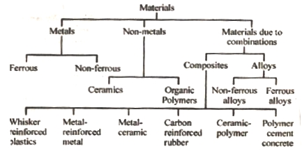

Q.3 How Engineering materials are classified?
Answer : Engineering materials are classified mainly three categories
1. Metals 2. Non-metals 3. Due to Combination

Metals : Metals are substances capable of changing their shape permanently. They are composed of elements which readily give up electrons to provide a metallic bond and electrical conductivity. Metals may be ferrous or non ferrous type. The ferrous metals contain Fe and C as their constituents. The behavior and properties of ferrous metals depend upon the percentage and the form of carbon present in them. They are iron and steel.
Non-ferrous metals not contain Fe and C as their constituents, examples of commonly used non-ferrous metals are AI, Cu, Ag, Zn, Ni, Sn, Cr, Pb etc. AI, Cu, Ag, and Au are good conductors of electricity, Ag is most malleable, Au is most ductile and Cr is corrosion resistant. Zn is used in the metal plating. Sn is used to make bushes and Ni imparts strength and creep resistance.
Non-metals – They can be further classified as ceramics and organic polymers. Ceramics are generally metallic or non metallic oxides. physically separable and chemically Homogeneous constituents of materials consisting of phases are also called ceramics. rocks, fireclay and firebricks, cements and limes are some commonly used ceramics. Ferrites, garnets, ferro-electrics and ceramic superconductors are the latest development in this area. organic polymers are derived mainly from the hydrocarbons. These consist of covalent bonds formed by carbon, chemically combined with oxygen and hydrogen. The polymers are obtained from monomers bonded by a chemical reaction (a process called polymerization). In this process, long molecular chain having high molecular weight is generated. Organic polymers are relatively inert and light, and generally have a high degree of plasticity. Bakelite, polyethylene, nylon, Teflon are some examples. Materials
Due to Combination- They may be alloys or composites. an alloy is a combination of two or more metals. They possess properties which are quite different from those of their constituent metals. Alloys may be ferrous non-ferrous depending on the base metal used. An alloy is prepared for a specific purpose to meet the particular requirements of an application. Some common ferrous alloys are invar, stainless steel and high speed steel (HSS). Non-ferrous alloys include phosphor bronze, brass, duralumin, babbits etc. Composites may be inorganic or organic . They have two or more constituents of dissimilar properties. The two major constituents may be metals and ceramics or metals and polymers, or ceramics and polymers or any other combination. instead of metals, alloys may also be used to make composites. Constituent of composites called reinforcing constituent may be in particulate form, fibrous form or flake form.